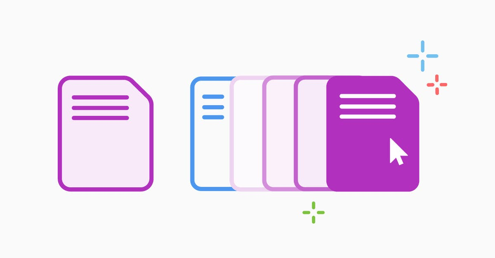

Lista desordenada
-Ordene las funciones del sistema operativo Linux.

 |
 |
 |
- ADMINISTRA EL HADWARE DEL SISTEMA.
- GESTIONA LOS PROCESOS Y LA MEMORIA.
- CONTROLA EL ACCECO A ARCHIVOS Y PERMISOS.
- COORDINA LA COMUNICACIÓN ENTRE SOFTWARE Y HARDWARE.
- FACILITA LA GESTIÓN DE REDES.